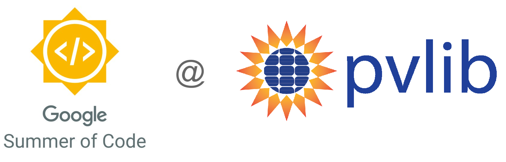

Adam R. Jensen - About Me¶
Great to see that you have stumbled upon my blog!
I’m a Ph.D. candidate at the Technical University of Denmark, working on modeling and assessing solar energy systems and the solar resource.
On this blog I’ll share some of the many interesting things I work on, including tips and tricks to working with solar resource data in Python.
Recent posts¶
See the blog archives for all blog posts.
2022-02-22 - DMI API Tutorial
This tutorial gives an introduction on how to use the Danish Meteorological Institute’s (DMI) API to download meterological observation data (v2).
2022-02-12 - Satellite derived irradiance maps
Satellite-derived irradiance data has several benefits over ground-measured irradiance despite its lower accuracy. The main advantages include a large geopgraphcial coverage (continents), long-time span (multiple decades), and low cost.
2022-01-06 - How to add an inset map with Cartopy in Python
You know that small map that shows a zoomed in view of a part of a bigger map? Well, it’s called an inset map and according to Wikipedia:
Inset maps are smaller maps that are included on the same page as the main map. They can show additional information related to the main map.
2021-09-23 - Overview of solar radiation monitoring stations
Ground measured solar irradiance data is extremely valuable and critical for benchmarking solar radiation products and understanding the long-term trend in the radiation budget. However, there are only a few hundred high-quality stations globally due to high costs and maintenance requirements. Currently, it is difficult to identify where the nearest solar radiation station is located, as there is no overview of stations worldwide. In this blog, I suggest solving this issue by creating a simple catalog/database of available high-quality radiation stations.
2021-08-27 - Fixing your git mess
On a day to day basis I use GitHub Desktop due to it’s nice graphical interface and that my git skills are close to zero. Every now and then I screw things sufficiently up that I don’t know how to fix it and sometimes I don’t even know how I ended up there. At this point, I really just want to go back in time to when my code was working - which is the topic of this blog post.
2021-08-22 - Summary of Google Summer of Code with pvlib
The coding period of this year’s Google Summer of Code (GSoC) is officially over, and it’s time to take a step back and evaluate the experience. For those of you who might not know, I’ve been working on extending pvlib’s iotools for the past 10 weeks, which I described in this blog post.
2021-08-02 - Staying safe on GitHub
Hardcoding credentials such as passwords is often tempting but almost always a bad idea. This is especially true if you are hosting your code on public platforms like GitHub for anyone to peruse. But what can you do?
2021-07-19 - Virtual environments cheat sheet
This cheat sheet will cover the basics of conda environments, though the general workflow is similar for other types of virtual environments.
2021-06-10 - pvlib - a one stop source for solar resource data
This title at least represents the aim of my Google Summer of Code (GSoC) project that I will be completing during the next 10 weeks. In short, I’ll be extending pvlib python’s current iotools functionalities to provide users with easy and standardized access to all major open-source solar resource databases.
